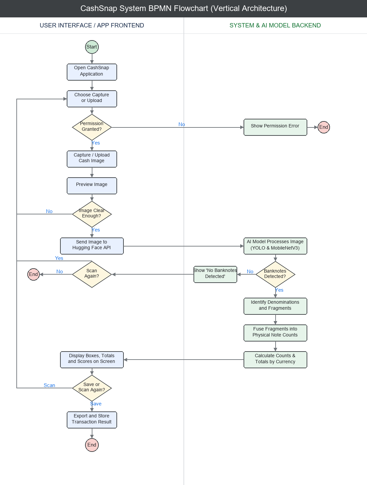

CashSnap: Khmer/USD Cash Counting Assistant
1. Theme Choice
CashSnap is an AI-assisted computer vision app developed to assist retail vendors, cashiers, and users in automatically counting mixed US Dollars (USD) and Khmer Riel (KHR) banknotes from a casual photograph captured on a mobile phone or laptop webcam. The app detects visible banknotes in the frame, recognizes their denominations, and aggregates final cash totals.
Unlike basic note detection setups designed for pristine, single-note layouts, CashSnap specifically targets challenging real-world retail layouts, providing robust counting under the following constraints:
- Overlapped Banknotes: Banknotes laid on top of each other, partially obscuring denomination designs.
- Fanned Stacks: Banknotes layered closely in fan geometries where only thin edges, numeric values, or border labels are exposed.
- Hand Occlusions: Fingers block banknote features during counter placement (as shown in Figure 1).
- Circulation Wear: Banknotes that are wet, dirty, folded, crinkled, or low-contrast due to circulation.
- Negative distractors: Table tops, wallets, receipts, and coins that should not trigger false positive counts.

2. Project Requirement Document (PRD)
The following table outlines the minimum functional requirements for the CashSnap application:
| Feature | Description | Purpose |
|---|---|---|
| Camera Capture | Captures high-resolution images of cash layouts using a phone camera or browser webcam. | Enable immediate cash layout capture. |
| Image Upload | Allows users to upload saved images (JPEG/PNG). | Support saved cash photos. |
| Image Preview | Displays the selected image on the interface before running model inference. | Allow checking photo clarity before analysis. |
| Banknote Detection | Runs YOLO object detection to propose bounding boxes of potential banknotes. | Locate individual notes in the frame. |
| Denomination Rec. | Identifies mix values (USD_1 to USD_100, KHR_500 to KHR_50000). | Allow multi-currency value calculation. |
| Partial Note Rec. | Detects notes from partial evidence (slivers, corners, edges) when overlap exists. | Support counting in dense fanned stacks. |
| Fragment Fusion | Matches overlapping boxes (IoU threshold 0.85) to avoid counting single notes twice. | Prevent overcounting from fragmented views. |
| Total Calculation | Calculates cash totals separately for USD and KHR. | Display clear Multi-currency total. |
| Confidence Display | Displays confidence scores and warns of low-confidence predictions. | Ensure transparency of count uncertainty. |
| Result Display | Superimposes colored bounding boxes, labels, and value counts on the image. | Make detection results understandable. |
| Error Handling | Gracefully logs API timeouts or camera permissions errors. | Provide a stable user interface. |
| Scan History | Maintains local transaction lists with CSV export functions. | Allow record-keeping and sharing. |
Non-Functional Requirements
- Accuracy: Minimizes double-counting of fanned notes while maintaining high recognition recall on visible banknote corners.
- Response Time: Live cloud Inference (Hugging Face API) completes in under 2.0 seconds; local ONNX inference processes in under 1.5 seconds on CPU.
- Privacy: Image data transfers are encrypted via HTTPS; API credentials are loaded strictly from secure `.env` files.
- Compatibility: Web layout renders smoothly on standard mobile browsers (Safari/Chrome) and desktops.
- Usability: Accessible high-contrast layout, single-click operations, and warnings on low-confidence outputs.
- Robustness: Standard fallback options to simulated Demo Mode if model servers are unreachable.
- Transparency: Displays warning messages and confidence ratings when banknote visibility is too low or blurry.
3. User Stories
- Shop Owner: "As a shop owner, I want to take a photo of mixed cash so that I can quickly count the total amount."
- Cashier: "As a cashier, I want the app to detect Khmer Riel and USD denominations so that I can separate totals by currency."
- Overlapped Handling: "As a user, I want the app to handle overlapped and fanned bills so that I do not need to arrange every note perfectly."
- Duplicate Prevention: "As a user, I want the app to avoid counting one physical bill multiple times so that visible fragments do not cause overcounting."
- Confidence Warning: "As a user, I want to see confidence scores and warning messages so that I know when the result may need manual checking."
- Image Quality Fallback: "As a user, I want to retake or upload another image when the photo is blurry so that the AI can produce a better result."
4. User Journey
The standard user journey consists of the following steps:
- User opens the CashSnap web application in their browser.
- User chooses either the Capture Image (camera/webcam) or Upload Image option.
- The browser requests camera permissions (if camera capture is chosen).
- User captures the cash photo or uploads a photo from the gallery.
- The app displays an image preview for confirmation.
- User reviews the preview and clicks "Analyze Cash".
- The app securely transmits image data to the local ONNX inference engine or Hugging Face API.
- The AI model runs YOLO banknote detection to locate all note coordinates.
- The fragment fusion algorithm resolves overlapping bounding boxes.
- System calculates banknote counts grouped by denomination.
- System calculates final values separately for US Dollars (USD) and Khmer Riel (KHR).
- The app displays annotated bounding boxes, total counts, and low-confidence warning banners.
- User exports transaction logs as a CSV file, runs a new scan, or closes the app.
5. BPMN Diagram
The BPMN flowchart below outlines the system logic split between the User's actions and the System / AI Model backend, showing the pipeline from camera permission checks to NMS fragment fusion and display.

6. Technologies Used
- Python: Core programming language for processing, data structures, and script runtimes.
- OpenCV & Pillow: Image decoding, preprocessing, geometric cropping, and bounding box annotations.
- Hugging Face API: Cloud inference hosting for YOLOv8 object detection and MobileNetV3 classifiers.
- ONNX Runtime: Lightweight CPU inference engine executing `.onnx` models locally within the Streamlit code.
- Streamlit: Web app framework used to build the responsive frontend UI.
- Requests & Dotenv: Issuing HTTPS API posts and loading secure keys from `.env` configurations.
- WebGL & Three.js: Synthetic generation engine used to generate pre-training sheets, note condition batches, and environment lighting review maps (as shown in Figure 3).

7. Challenges and Limitations
Banknote counting under retail conditions is a complex spatial problem. The biggest challenge lies in **overlaps and fanning**: when notes are layered, a single note can appear as multiple disconnected fragments. Naive counting methods that treat every box as a distinct banknote will severely overcount.
To mitigate this, CashSnap implements a **Fragment Fusion NMS algorithm** (IoU threshold 0.85). In test suites like `probe_fragment_count_fusion.py`, naive counts resulted in an overcount of **+40** notes, whereas the same-class proposal fusion matched the true count of **60** physical bills.
Furthermore, banknote physical wear (stains, damp glossiness, folds, dirt) introduces domain noise. While WebGL synthetic data pre-training aids robustness, validation on real-world hand-fan layouts remains the major proof bottleneck. CashSnap uses a domain gap validation harness (shown in Figure 4) to audit synthetic-to-real transfer maps.

8. Conclusion
CashSnap demonstrates a robust computer vision blueprint by combining lightweight local ONNX/Hugging Face models with custom spatial NMS fusion rules to solve multi-currency counting. Focused on Khmer Riel and USD layouts, it resolves fanning and hand occlusions. While the synthetic pre-training renderer is highly robust, validating and proving real-world fan transfer scores remains the next major milestone.